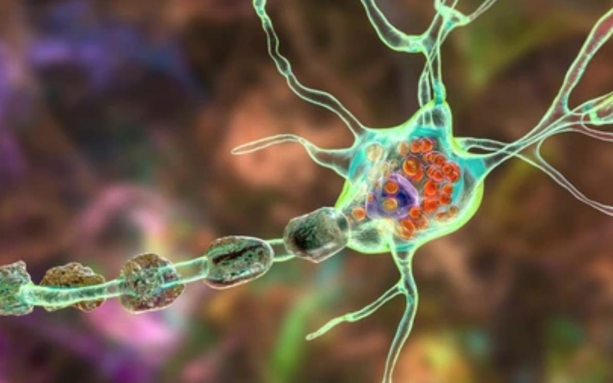
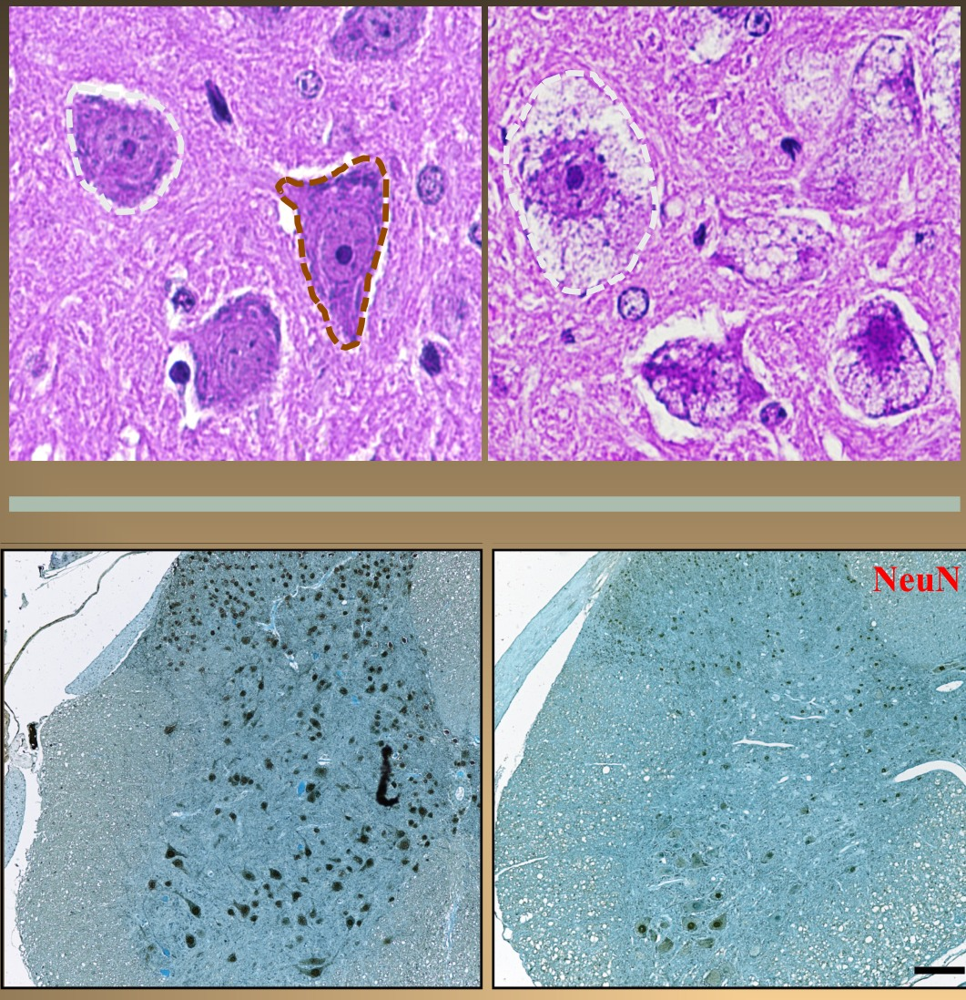
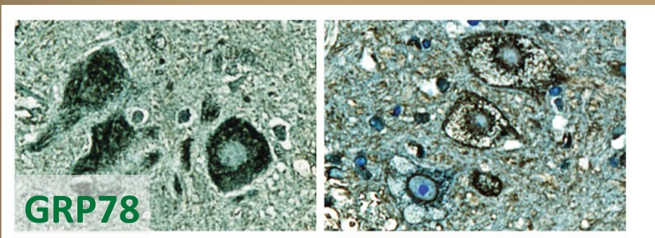
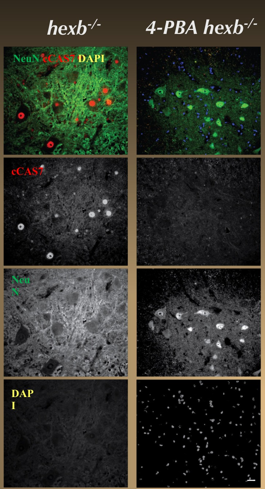
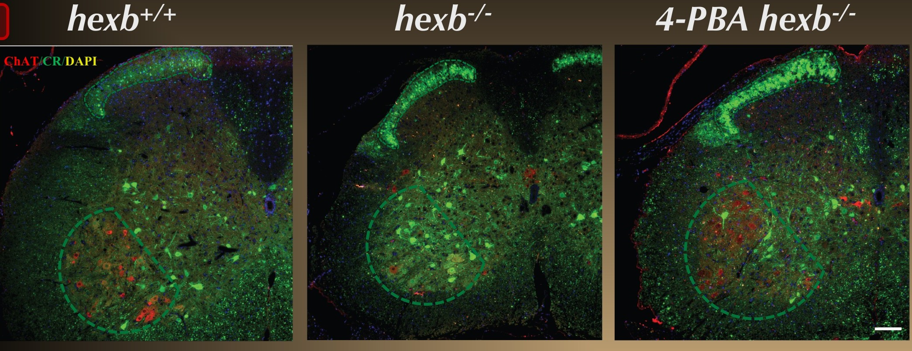
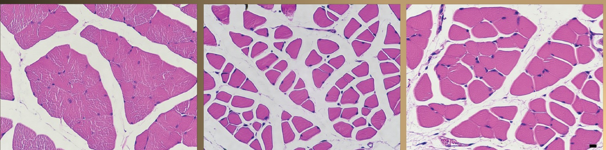

Accelerated Path via Repurposing
De novo drug R&D costs surged 213% over the past decade to nearly $800M per approved drug. Repurposing FDA-approved 4-PBA slashes translational timelines and de-risks human safety.
Lysogenix Therapeutics is advancing 4-phenylbutyric acid (4-PBA) and its derivatives as first-in-class chemical chaperone therapies for Lysosomal Storage Diseases, starting with early- and late-onset GM2 gangliosidoses (Tay-Sachs and Sandhoff disease).
01 / Our Mission
Our company aims to bring to market therapeutic drugs to treat neurodegenerative diseases, including Lysosomal Storage Diseases (LSDs). Our immediate growth plan focuses on advancing 4-phenylbutyric acid (4-PBA) and next-generation chemical chaperone derivatives from robust preclinical proof-of-concept toward clinical translation.
Rooted in academic excellence from McMaster University in Hamilton, Ontario, Lysogenix bridges foundational discoveries in endoplasmic reticulum (ER) stress biology with the speed and capital efficiency of rational drug repurposing.
De novo drug R&D costs surged 213% over the past decade to nearly $800M per approved drug. Repurposing FDA-approved 4-PBA slashes translational timelines and de-risks human safety.
Instead of addressing a single enzyme defect in isolation, 4-PBA acts as a chemical chaperone to rebalance GRP78, ATF6, IRE1/XBP1, and PERK pathways—preventing motor neuron apoptosis.
Pending patent covering 4-PBA for ER stress-induced neurodegeneration in GM2 gangliosidosis, paired with a pipeline growth strategy built on proprietary 4-PBA derivatives.
02 / Disease Biology & Unmet Need
Lysosomal Storage Diseases (LSDs) are inherited, monogenic disorders where gene mutations cause progressive lysosomal substrate accumulation, driving severe cellular dysfunction, ER stress, and neuronal apoptosis.
GM2 gangliosidoses—comprising Tay-Sachs disease (TSD) and Sandhoff disease (SD)—arise from inherited defects in lysosomal β-hexosaminidase A and B, respectively. Each manifests across three clinical forms: infantile, juvenile, and late-onset.

Late-onset Sandhoff disease patients frequently present as a motor neuron disease, with lower motor neuron symptoms reported in 42% of late-onset cases. Hallmark spinal cord anterior horn motor neurons (AHNs) show pronounced GRP78 accumulation and ER stress markers prior to degeneration.


03 / Therapeutic Mechanism
GRP78 serves as the master regulator of the three ER stress arms—ATF6, IRE1, and PERK. Under chronic lysosomal storage stress, these pathways trigger pro-apoptotic cascades (CHOP, c-Cas7, PARP). Toggle below to see how our chemical chaperone shifts anterior horn motor neurons from apoptosis to survival.
Mild reticular staining in untreated AHNs; insufficient folding capacity under chronic GM2 storage burden.
Mild reticular cytosolic staining in untreated hexb-/- AHNs limits adaptive chaperone transcription.
Sparse nuclear XBP1 staining impairs ER-associated degradation and protein folding homeostasis.
Intense reticular p-eIF2α drives chronic CHOP activation, triggering apoptotic cleavage of Caspase-7.
Heavy nuclear cleaved Caspase-7 localization leads to loss of ChAT-positive cholinergic anterior horn neurons, skeletal muscle myofibril atrophy, neuromuscular decline, and premature mortality.
Preclinical Study Design
04 / Preclinical Proof-of-Concept
Our hexb-/- mouse model recapitulates the most severe infantile phenotype of Sandhoff and Tay-Sachs disease. Explore the five validated preclinical evidence modules below.
Age (Days) vs. Probability of Survival (%)
Age (Weeks) vs. Hang Time (seconds)
Significant improvement in righting reflex compared to untreated hexb-/- mice.
Preserved grip strength & neuromuscular stamina weeks beyond untreated collapse (Weeks 15–21).
Highly significant survival shift (P < 0.0008), extending median survival by ~15 days in an acute infantile model.
Immunofluorescence analysis at 80 days demonstrates that 4-PBA directly reprograms the unfolded protein response in spinal cord anterior horn neurons (AHNs), promoting adaptive chaperones while suppressing maladaptive translational arrest.

In untreated hexb-/- mice, chronic ER stress triggers heavy nuclear localization of cleaved Caspase-7 (c-Cas7) in anterior horn neurons. 4-PBA treatment significantly suppresses nuclear c-Cas7 positive AHNs while restoring NeuN neuronal staining.
Quantification in Anterior Horn Neurons (80d)

ChAT-positive motor neurons release acetylcholine at the neuromuscular junction to activate skeletal muscles. While untreated hexb-/- anterior horn neurons lose cytosolic ChAT staining, 4-PBA maintains intense cytosolic ChAT expression—highlighting anterior horn motor neurons as a primary therapeutic target relative to calretinin-positive posterior horn interneurons.


Consistent with preserved cholinergic innervation from spinal cord anterior horn motor neurons, 4-PBA treatment maintains normal skeletal muscle myofibril cross-sectional area in hexb-/- mice at both 80 and 120 days of age—preventing the severe denervation-induced muscle fiber atrophy seen in untreated animals.

Quantification at Day 80 and Day 120
05 / Market Opportunity & Landscape
Orphan and lysosomal storage disease therapeutics represent one of biopharma's fastest-growing sectors—yet skyrocketing R&D costs create an exceptional opening for repurposed small-molecule therapies.
Global orphan drug sales in 2020, expanding at an estimated ~11% CAGR through 2026.
Estimated at $22 billion in 2021 and projected to reach $34 billion by 2030.
Combined 2020 sales from just two LSD enzyme replacement therapies: Cerezyme (Gaucher) & Fabrazyme (Fabry).
Global market valuation (USD Billions)
Comparing active therapeutic modalities in GM2 & LSDs
Targets ER stress-induced neurodegeneration directly in spinal cord motor neurons; leverages FDA-approved safety backbone for accelerated translation across early- and late-onset GM2 gangliosidoses.
Sanofi's substrate deprivation therapy program for GM2 gangliosidoses (expected rollout 2026) validates commercial demand for small-molecule interventions in GM2.
Proven blockbuster commercial potential (>$2B combined annual sales), though peripheral protein infusions face blood-brain barrier and manufacturing cost limitations for CNS-predominant LSDs.
Actively explored across monogenic LSDs, but carry high development costs, complex manufacturing, and lengthy regulatory paths relative to repurposed small molecules.
06 / Scientific Leadership
Lysogenix Therapeutics brings together deep domain expertise in lysosomal storage disease genetics, ER stress biology, and translational drug discovery from McMaster University.

CEO, Lysogenix Therapeutics Inc. • Professor, McMaster University
Leads corporate strategy, translational development, and preclinical validation of 4-PBA and its derivatives in GM2 gangliosidoses and neurodegenerative lysosomal storage disorders.
suleiman.igdoura@lysogenix.com
CSO, Lysogenix Therapeutics Inc. • Professor, McMaster University
Guides mechanistic biology and chemical chaperone discovery, bringing world-class expertise in endoplasmic reticulum (ER) stress signaling, GRP78 regulation, and cellular proteostasis.
McMaster University • Hamilton, ON07 / Connect With Lysogenix
We welcome inquiries from life sciences investors, strategic biopharma partners, clinical collaborators, and rare disease patient advocacy organizations interested in advancing 4-PBA and next-generation therapeutics for GM2 gangliosidoses and lysosomal storage diseases.
Lysogenix Therapeutics Inc.
175 Longwood Rd S., Suite 305
Hamilton, Ontario, Canada L8P 0A1
Direct message to Dr. Suleiman Igdoura and the Lysogenix Therapeutics leadership team.